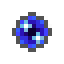

|  | Quantum Entangled Singularity |
Required to create a connection between to Quantum Network Bridges, they are always produced in matching pairs, to create a connection place 1 of the pair of Quantum Entangled Singularity into the of the bridge on each side.
Item crafted by causing a reaction between Ender Dust and Singularity. Any Explosive force should be enough to trigger the reaction. Note that the ender pearl dust from portal gun is not in the ore dictinoary, and will not work
*Nearly any explosion will work, the demo below uses TNT, but even creepers will work.
Always produced in pairs, but only requiring a single Singularity.
It might be a good idea to label these with names when you create them using the vanilla anvil.
AE also includes a block called Tiny TNT, this is a small craftable TNT which can have its block damage disabled, but can still hurt a litttle, and can be used as an alternative to vanilla tnt / other explosions even when block damage is disabled.
| Last modified on 03/14/2014 01:55 PM CDT By AlgorithmX2 |
|
|